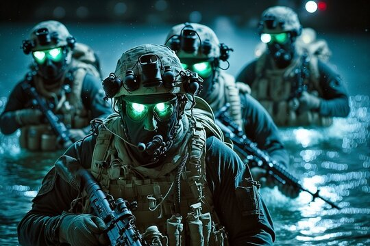

The USS John C. Stennis (CVN 74) is a Nimitz-class aircraft carrier that was commissioned in 1995 after its keel was laid in 1991. Named after Mississippi Senator John C. Stennis, the ship has completed multiple deployments to the Persian Gulf and Pacific, supported operations like Southern Watch and Noble Eagle, and conducted training exercises. The carrier is currently undergoing a major Refueling and Complex Overhaul (RCOH) in Newport News, Virginia, with completion expected in the mid-2020s.
